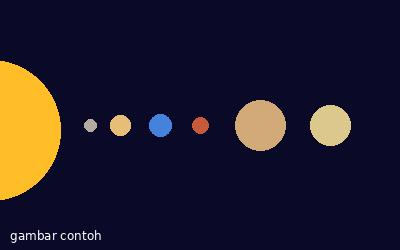

Matahari adalah bintang di pusat tata surya. Semua planet, termasuk Bumi, bergerak mengelilinginya.
Tata surya kita punya 8 planet: Merkurius, Venus, Bumi, Mars, Jupiter, Saturnus, Uranus, dan Neptunus.
Empat planet pertama disebut planet dalam karena dekat dengan Matahari dan permukaannya berbatu. Empat planet berikutnya disebut planet luar dan sebagian besar tersusun dari gas.

Fakta: satu hari di Venus lebih lama daripada satu tahunnya.